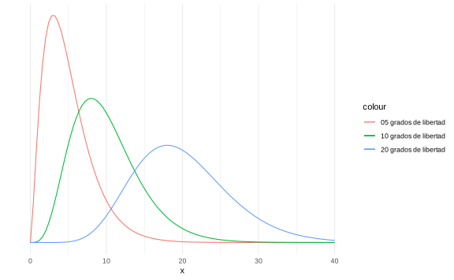
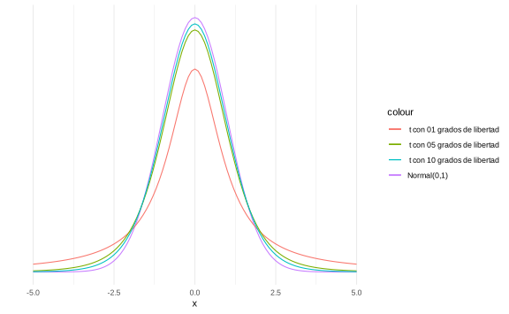

Capítulo 6 Distribución muestral de un estadístico
6.1 Distribución muestral
Definición. Suponga que \(X_1,\dots,X_n\) es una muestra con parámetro \(\theta\) con parámetro \(\theta\) (desconocido). Sea \(T=r(X_1,\dots,X_n,\theta)\). La distribución de \(T\) dado \(\theta\) se llama distribución muestral.
Ejemplo. Si \(X_1,\dots,X_n \sim N(\mu,\sigma^2)\). El MLE de \(\mu\) es
\[\begin{equation*} \bar X_n =\dfrac 1n \sum_{i=1}^n X_i. \end{equation*}\]
La distribución muestral del estadístico \(\bar X_n\) es
\[ \bar X_n \sim N\left(\mu, \dfrac{\sigma^2}n \right) \]
\(\mathbb E[\bar X_n] = \dfrac 1n\displaystyle\sum_{i=1}^n\mathbb E[X_i] = \dfrac 1n\cdot n \mathbb E[X_1] = \mu\).
\(\text{Var}(\bar X_n) = \text{Var}\left(\dfrac 1n \displaystyle\sum_{i=1}^n X_i\right) = \dfrac{1}{n^2}\cdot n\cdot \text{Var}(X_1) = \dfrac{\sigma^2}n\).
Ejemplo. \(X_i:\) tiempo de vida de un aparato. \(X_1,\dots,X_n \stackrel{i.i.d}{\sim} \text{Exp}(\theta)\). La previa de \(\theta\) es \(\Gamma(1,2)\). Solamente observamos \(n=3\). La posterior sería
\[ \theta|X \sim \Gamma(1+3,2+\sum_{i=1}^3 X_i). \]
El estimador bayesiano, bajo pérdida cuadrática, es \[ \mathbb E[\theta|X] = \dfrac 4{2+\sum X_i} = \hat\theta \]
Problema: estimar \(\mathbb P(|\hat\theta-\theta|<0.1)\).
Note que
\[\begin{align*} \mathbb P(|\hat\theta-\theta|<0.1) &= \mathbb E [1_{|\hat\theta-\theta|<0.1|\theta)}] \\ &= \mathbb E[\mathbb E [1_{|\hat\theta-\theta|<0.1|\theta)}\vert \theta]] \\ &= \mathbb E[\mathbb P(|\hat\theta-\theta|<0.1|\theta)] \end{align*}\]
Debemos definir primero cuál es la función de distribución de \(\hat{\theta}\).
\[\begin{align*} F_{\hat{\theta}}(t|\theta) = \mathbb P(\hat\theta\leq t|\theta)&= \mathbb P\left( \dfrac 4{2+T}\leq t\bigg|\theta\right) \\ & = \mathbb P\left( 2+T \geq \dfrac 4t\bigg|\theta\right)\\ & = \mathbb P\left( T \geq \dfrac 4t-2\bigg|\theta\right) \end{align*}\]
Nota: Recuerde que sumas de exponenciales es una gamma. (Ver teorema 5.7.7)
Entonces \(T=\sum_{i=1}^{3}X_{i}\sim \Gamma(3,\theta)\), por lo que \(F(t|\theta) = 1-G_{\Gamma(3,0)}\left( \dfrac 4t-2\right)\). Aqui denotamos como \(G\) a la distribución de \(T\).
De esta manera,
\[\begin{align*} \mathbb P[|\hat\theta-\theta|<0.1|\theta] & = \mathbb P [-0.1+\theta < \hat\theta < 0.1 +\theta|\theta]\\ & = G_{\Gamma(3,\theta)}\left(\dfrac 4{-0.1+\theta} - 2\right)-G_{\Gamma(3,\theta)}\left(\dfrac 4{0.1+\theta} - 2\right) \end{align*}\]
y se toma la esperanza para estimar la esperanza. Este valor no se puede estimar de forma cerrada, sino que se podría aproximar mediante una simulación

Otra solución es estimar \(\theta\) usando el MLE \(\hat{\theta} = \frac{3}{T}\). Se podría construir esa probabilidad de forma que no dependa de \(\theta\).
\[ \mathbb P \left(\bigg| \underbrace{\dfrac{\hat\theta_{MLE}}\theta-1}_{\text{Cambio relativo}} \bigg| < 0.1\bigg|\theta \right) = \mathbb P \left( \bigg| \dfrac{3}{\theta T}-1 \bigg| < 0.1 \bigg| \theta \right) = \Delta \]
Si \(T\sim\Gamma(3,\theta) \implies \theta T \sim \Gamma(3,1)\).
Por lo tanto, \[ \Delta = \mathbb P \left(0.9<\dfrac 3{\theta T}<1.1\bigg|\theta\right) = \mathbb P \left(\dfrac 3{1.1}<\theta T<\dfrac 3{0.9}\right) = 13,4\% \]
6.2 Distribución \(\chi^2\)
Definición. Para \(m>0\) definimos \[ \chi^2_m \sim \Gamma\left(\dfrac m2, \dfrac 12 \right) \]
la distribución chi-cuadrado con \(m\) grados de libertad.
Propiedades:
\(\mathbb E[X] = m\).
\(\text{Var} (X) = 2m\).
Para \(X_i \sim \chi^2_{m_i}\), \(i = 1,\dots, k\), independientes, entonces
\[\sum_{i=1}^k X_i \sim \chi^2_{\sum m_i}\]
Si \(X\sim N(0,1) \implies Y = X^2\sim \chi^2_1\).
Si \(X_i \stackrel{i.i.d}{\sim} N(0,1) \implies \sum_{i=1}^m X_i^2 = \chi^2_m\).
Ejemplo. Si \(X_1,\dots,X_n \sim N(\mu,\sigma^2) \implies Z = \dfrac{X_i-\mu}{\sigma} \sim N(0,1)\) \(\forall i\).
Entonces \[\sum Z_i^2 \sim \chi^2_n \implies \sum \dfrac{(X_i-\mu)^2}{\sigma^2}\sim \chi^2_n \quad (\*) \]
Además, si \(\mu\) es conocido y \(\sigma^2\) desconocido, entonces el MLE de \(\sigma ^{2}\) es \[\hat\sigma_0^2=\dfrac{1}n \sum_{i=1}^n(X_i-\mu)^2\]
De esta manera, observe que, de \((*)\),
\[\dfrac{n}{\sigma^2} \dfrac{1}n \sum_{i=1}^n(X_i-\mu)^2 = n\dfrac{\hat \sigma_{0}^2}{\sigma^2} \sim \chi^2_n \]
La principal limitación es que \(\mu\) es conocida. Asuma que también es desconocida. ¿Cuál es la distribución muestral de \((\bar X_n,\hat\sigma^2)\)?
Teorema. Bajo las condiciones anteriores,
\(\bar X_n\) y \(\hat \sigma_n\) son independientes aunque \(\hat \sigma_n\) es función de \(\bar X_n\).
La distribución muestral de \(\bar X_n\) es \(N\left(\mu,\dfrac{\sigma^2}{n}\right)\).
\(n\dfrac{\hat \sigma_{0}^2}{\sigma^2} =\sum_{i=1}^n \dfrac{(X_i-\mu)^2}{\sigma^2} \sim \chi^2_{n-1}\).
Nota: De álgebra lineal, recuerde que una matriz \(A_{n\times n}\) es ortogonal si cumple que \(A^{-1} = A\), \(\det(A) = 1\). Si \(X, Y\in \mathbb R ^{n}\), \(AX =Y\), \(A\) ortogonal, entonces \[ \|Y\|_2^2 = \|X\|_2^2 \quad (\Delta\Delta)\]
Teorema. Si \(X_1,\dots,X_n \sim N(0,1)\), \(A\) es ortogonal \(n\times n\) y \(Y=AX\) donde \(X = (X_1,\dots,X_n)^T\) entonces \(Y_1,\dots,Y_n \sim N(0,1)\).
Prueba. Ver 8.3.1.
Si \(X_1,\dots,X_n \sim N(0,1)\), use Gram-Schmidt con vector inicial
\[\begin{equation*} u = \left[ \frac{1}{\sqrt{n}}, \cdots, \frac{1}{\sqrt{n}}\right] \end{equation*}\]
Generamos \(A = \begin{bmatrix}u\\\vdots\end{bmatrix}\). Defina \(Y =AX\). Entonces \[ Y_1 = uX = \dfrac 1{\sqrt{n}}\sum_{i=1}^n X_i = \sqrt{n} \bar X_n.\]
Por la propiedad \((\Delta \Delta)\), \(\displaystyle\sum_{i=1}^n Y_i^2 = \displaystyle\sum_{i=1}^n X_i^2\). Entonces, \[ \sum_{i=2}^nY_i^2 = \sum_{i=1}^nY_i^2 - Y_1^2 = \sum_{i=1}^nX_i^2-n\bar X_n^2\sum_{i=1}^n(X_i-\bar X_n)^2. \]
Como \(Y_1^2\) y \(\sum_{i=2}^nY_i^2\) son independientes, entonces \(\bar X_n\) y \(\dfrac{1}n \sum_{i=1}^n(X_i-\bar X_n)^2\) son independientes.
Note que \(\sum_{i=2}^n Y_i^2 \sim \chi^2_{n-1}\) ya que \(Y_i \stackrel{i.i.d}{\sim} N(0,1)\).
Si \(X_1,\dots,X_n \sim N(\mu, \sigma^2)\), tome \(Z_i = \dfrac{X_i-\mu}\sigma\) y repita todo lo anterior.
Ejemplo. \(X_1,\dots,X_n\sim N(\mu,\sigma^2)\) (\(\mu,\sigma\) desconocidos). Los MLE son
\[\hat \mu = \bar X_n,\quad \hat\sigma = \bigg[\dfrac{1}{n}\sum_{i=1}^n(X_i-\bar X_n)^2 \bigg]^{\frac 12}.\]
Encuentre \(n\) tal que
\[\begin{equation*} p = \mathbb P \bigg[|\hat\mu-\mu|<\dfrac {\sigma}{5}, |\hat\sigma-\sigma|<\dfrac \sigma 5\bigg] \geq \dfrac 12. \end{equation*}\]
Por independencia de \(\bar X_n\) y \(\hat\sigma^2_n\), \[p= \mathbb P \bigg[|\hat\mu-\mu|<\dfrac \sigma5\bigg] \mathbb P \bigg[|\hat\sigma-\sigma|<\dfrac \sigma5\bigg]\]
Por un lado, \[\mathbb P \bigg[|\hat\mu-\mu|<\dfrac \sigma5\bigg] = \mathbb P \bigg[-\dfrac{\sqrt n}5\leq \underbrace{\dfrac{\sqrt{n}(\hat\mu-\mu)}\sigma}_{N(0,1)} <\dfrac {\sqrt n}{5}\bigg] = \Phi\left(\dfrac{\sqrt n}{5}\right)-\Phi\left(-\dfrac{\sqrt n}{5}\right).\]
Además,
\[\begin{align*} \mathbb P \bigg[|\hat\sigma-\sigma|<\dfrac \sigma5\bigg] =&\mathbb P \bigg[-\dfrac \sigma 5 < \hat\sigma-\sigma<\dfrac \sigma5\bigg] \\ =&\mathbb P \bigg[-\dfrac{\sigma}{5} +\sigma < \hat\sigma<\dfrac \sigma5 +\sigma\bigg] \\ =&\mathbb P \bigg[-\dfrac 45 \sigma < \hat\sigma<\dfrac 65\sigma\bigg] \\ =&\mathbb P \bigg[-\dfrac 45 < \dfrac{\hat\sigma}{\sigma}<\dfrac 65\bigg] \\ =&\mathbb P \bigg[\left(-\dfrac 45\right)^2 < \dfrac{\hat{\sigma}^2}{\sigma^2}<\left(\dfrac 65\right)^2\bigg] \\ =&\mathbb P \bigg[0.64n < \dfrac{\hat{n\sigma}^2}{\sigma^2} <1.44n\bigg] \\ =& F_{\chi^2_{n-1}}(1.44n)-F_{\chi^2_{n-1}}(0.64n). \end{align*}\]
Estime \(n\) de manera que \[\bigg[1-2\Phi\left(-\dfrac{\sqrt n}{5}\right)\bigg][F_{\chi^2_{n-1}}(1.44n)-F_{\chi^2_{n-1}}(0.64n)] \geq \dfrac 12.\]
Se resuelve numéricamente, y si \(n=21\) se cumple.
ggplot(data = data.frame(x = seq(0, 40, length.out = 1000)), aes(x)) +
stat_function(fun = dchisq, args = list(df = 5), aes(color = "05 grados de libertad")) +
stat_function(fun = dchisq, args = list(df = 10), aes(color = "10 grados de libertad")) +
stat_function(fun = dchisq, args = list(df = 20), aes(color = "20 grados de libertad")) +
ylab("") +
scale_y_continuous(breaks = NULL) +
theme_minimal()
6.3 Distribución \(t\)
Definición. Sea \(Y\) y \(Z\) dos variables independientes tal que \(Y\sim \chi^2_m\) y \(Z\sim N(0,1)\). Si \[X := \dfrac Z{\sqrt{\dfrac Ym}},\] tiene una distribución \(t\) de Student con \(m\) grados de libertad. Tiene como densidad \[f_X(x) = \dfrac{\Gamma\left(\dfrac{m+1}2\right)}{\sqrt{m\pi}\Gamma\left(\dfrac m2 \right)}\left(1+\dfrac{x^2}m\right)^{-\frac{m+1}2}, \quad x\in \mathbb R.\]
Propiedades:
\(f_X\) es simétrica.
La media de \(X\) no existe si \(m\leq 1\). Si la media existe, es 0.
Las colas de una \(t\) de Student son más pesadas que una \(N(0,1)\).
Si \(m\) es entero, los primeros \(m-1\) momentos de \(X\) existen y no hay momentos de orden superior.
Si \(m>2\), \(\text{Var}\left(X \right)=\dfrac m{m-2}\).
Si \(m=1\), \(X\sim \text{Cauchy}\).
Ejercicio: \(f_x(x)\xrightarrow[m\to \infty]{}\Phi(x)\) (sirve como aproximación). La discrepancia de ambas está en la cola y se disipa cuando \(m\) es grande.
Recuerde que, por el teorema 8.3.1, \(\bar X_n\) y \(Y=\dfrac{n\hat\sigma^2}{\sigma}\) son independientes, con \(\bar X_n \sim N\left(\mu, \dfrac{\sigma^2}{n}\right)\) y \(Y\sim \chi^2_{n-1}\). Además, \[Z = \sqrt n\dfrac{\bar X_n-\mu}{\sigma} \sim N(0,1).\]
Sea
\[T = \dfrac Z{\sqrt{\dfrac Y{n-1}}} = \dfrac{\sqrt n \dfrac{\bar X_n-\mu}{\sigma}} {\sqrt{\dfrac{\dfrac{n\hat\sigma^2}{\sigma^2}}{n-1}}} = \dfrac{\bar X_n-\mu}{\sqrt{\dfrac{\hat\sigma}{n-1}}}\] el cual no depende de \(\sigma\).
Teorema. Si \(X_1,\dots, X_n \stackrel{i.i.d}{\sim} N(\mu,\sigma^2)\), defina \[\sigma' = \bigg[\dfrac 1{n-1}\sum_{i=1}^n(X_i-\bar X_n)^2\bigg]^\frac 12.\] Entonces \[\dfrac{\sqrt{n}(\bar X_n-\mu)}{\sigma'} \sim t_{n-1}\]
Nota. \(\sigma' = \left(\dfrac n{n-1}\right)^\frac 12 \hat\sigma\) (si \(n\) es grande, \(\sigma' = \hat\sigma\)).
Prueba. Sean \[S_n^2=\sum_{i=1}^n(X_i-\bar X_n)^2, \quad Z = \sqrt n \dfrac{\bar X_n-\mu}{\sigma}. \] Dado que \(Y = \dfrac{S_n^2}{\sigma^2}\sim \chi^2_{n-1}\), entonces
\[\begin{align*} U = \dfrac{Z}{\sqrt{\dfrac Y{n-1}}} & = \dfrac{\dfrac{\sqrt n}\sigma (\bar X_n-\mu)}{\sqrt{\dfrac{S_n^2}{\sigma^2(n-1)}}} \\ & = \dfrac{\sqrt n (\bar X_n-\mu)}{\sqrt{\dfrac{S_n^2}{n-1}}}\\& = \dfrac{\sqrt n (\bar X_n-\mu)}{\sigma'} \sim t_{n-1}. \end{align*}\]
ggplot(data = data.frame(x = seq(-5, 5, length.out = 1000)), aes(x)) +
stat_function(fun = dnorm, args = list(mean = 0, sd = 1), aes(color = "Normal(0,1)")) +
stat_function(fun = dt, args = list(df = 1), aes(color = " t con 01 grados de libertad")) +
stat_function(fun = dt, args = list(df = 5), aes(color = " t con 05 grados de libertad")) +
stat_function(fun = dt, args = list(df = 10), aes(color = " t con 10 grados de libertad")) +
ylab("") +
scale_y_continuous(breaks = NULL) +
theme_minimal()